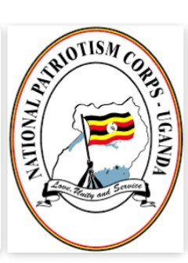

NATIONAL PATRIOTISM CORPS-UGANDA (NPC)
Names: Dr. Mathew Lukwiya
Born: 24 November 1957
Home town: Kitgum, Uganda
Died: 5 December 2000 (age 43) in St. Mary’s Hospital Lacor, Gulu, Uganda
Residence: Gulu, Uganda
Citizenship: Uganda
Fields: Tropical pediatrics, Health administration
Institutions: St. Mary’s Hospital Lacor Alma mater Makerere University, Liverpool School of Tropical Medicine
Known for: Leadership of medical efforts during 2000 Ebola outbreak
Notable awards: American Medical Association “role model”, named Memorial Lecture series
Lukwiya, an ethnic Acholi, grew up in the town of Kitgum. His father, a fishmonger, drowned when Lukwiya was 12. His mother was a petty trader who smuggled tea across the border with Sudan to trade for soap. Lukwiya was one of four sons. While his mother started teaching him how to smuggle goods by bicycle, Lukwiya began to prove himself to be an extraordinary student. He came in at the top of his class in grade school, received the top school-leaving marks in the country, going on to attend university and medical school through a series of scholarships. He took a position as a medical intern at St. Mary’s, a Catholic missionary hospital, in 1983.
After three months, the founders of the hospital, Dr. Piero Corti and his wife Lucille Teasdale-Corti, had decided that he would be their successor. He soon came to be known to his colleagues and patients as “Dr. Matthew”. Many patients were victims of attacks by the rebel Lord’s Resistance Army. On Good Friday 1989, the rebels came to St. Mary’s to abduct several Italian nuns.
Lukwiya managed to convince the rebels to take him instead and spent a week wandering through the brush in his doctor’s gown until the rebels released him. He subsequently opened the gates of the hospital compound to people seeking a place to sleep that was safe from rebel attacks and abduction. Until the Ebola outbreak, 9000 people sought sanctuary on the hospital grounds nightly to sleep.
In a later incident, Lukwiya, his wife Margaret and five children were lying in bed one evening listening to nearby fighting between the rebels and government forces when a mortar shell crashed through the ceiling of their house, but failed to explode. He also played an unpublicized role in advocating for a peaceful solution to the war.
In 1990, Lukwiya earned a scholarship to earn a master’s degree in tropical pediatrics in Liverpool School of Tropical Medicine. Despite being offered a teaching position at the school, where he earned the best marks in the school’s history, he appears to have never considered any other option than returning to St. Mary’s. Under Lukwiya’s administration the hospital tripled its capacity to 18,000 patients annually, included wounded from both sides of the conflict, and a further 500 out-patients daily. St. Mary’s became easily the best hospital in northern Uganda, arguably the best in the country and one of the top hospitals in East Africa.
In December 1998, Lukwiya moved his family to the capital city, Kampala, far from the violence of the northern war. There he sought a master’s in public health at Makerere University, leaving the running of the hospital to colleague Cyprian Opira. In 1999, Lukwiya, always a church-going Protestant, took his born-again wife to a Pentecostal church and declared that he too was born again.
On the morning of 7 October 2000, Lukwiya received a phone call from Opira informing him that a mysterious illness had killed two of the hospital’s student nurses, all of whom had begun bleeding or vomiting blood. Opira asked Lukwiya for help and he arrived that evening, in time to witness the death of a third nursing student, Daniel Ayella.
He had head nurse Sister Maria Di Santo bring him the charts of all unusual deaths in the past two weeks and identified 17 cases with similar symptoms. Lukwiya and Sr. Maria spent most of that night reading reports from the U.S. Centers for Disease Control and Prevention (CDC) and the World Health Organization (WHO) on infectious diseases that caused bleeding. By the end of their review, they suspected Ebola.
The literature on Ebola, largely based on a 1995 outbreak in Kikwit, Congo that had killed four (4) out of five (5) patients, stated that the sicker a patient, the more infectious they became. Dead bodies themselves were highly contagious. Lukwiya immediately recognized this as a particular problem in Acholiland, where the traditional practice was for the bereaved family to wash the body of the deceased before burial.
On the morning of 8 October, Lukwiya informed staff of his suspicion that the illness was a viral hemorrhagic fever. That afternoon, a group of local community leaders came to the hospital reporting that entire families were dying in their villages. He ignored the usual bureaucratic protocols and placed a direct call to Dr. Sam Okware, Uganda’s Commissioner of Community Health Services, who dispatched a team from the Uganda Virus Research Institute to take blood samples.
By the time the team arrived, Lukwiya had already set up an isolation ward for suspected Ebola cases, in line with the WHO guidelines. The special ward was staffed by three doctors, five nurses and five nursing assistants, all volunteers. When a South African lab confirmed the Ebola outbreak on October 15, and a WHO delegation arrived in Gulu, they were astonished at the efficiency of the operation. Dr. Simon Mardel, a member of the WHO team, stated,
“ I had thought people would be unwilling to work. I thought we would be facing a situation where patients were totally neglected and an isolation ward to which people wouldn’t want to come because it would just be a mortuary. But they had implemented the manual – a very specialized recipe. They were giving highly sophisticated care. It was remarkable. There was even a little wooden device for pulling boots off they had made, exactly as the manual describes.”
The isolation ward of nearby Gulu Regional Referral Hospital in October 2000.
Finding that their assistance was not required at St. Mary’s, the WHO and Médecins Sans Frontières rapid response teams offered their assistance at Gulu Regional Referral Hospital, where they found corpses abandoned in their hospital beds.
The crisis continued to worsen. By the third week of October, the number of Ebola patients had increased to almost 60, overwhelming the volunteers in the isolation ward. Lukwiya ordered other nurses to assist the patients and tried to lead by example, working with Ebola patients from 7 am to 8 pm. However, despite instituting risk minimization procedures, including wearing of robes, multiple gloves, surgical masks and goggles, hospital workers continued to fall ill. Twelve more died.
At the funeral of an Italian nun on 7 November, he attempted to rally the morale of his workers: “It is our vocation to save life. It involves risk, but when we serve with love, that is when the risk does not matter so much. When we believe our mission is to save lives, we have got to do our work.”
Matters reached a breaking point in late November. While the national epidemic had already peaked, St. Mary’s endured a terrible day. In the 24-hour period ending at the dawn of 24 November, seven patients died, three of which were health workers. Two of these were nurses who did not work in the isolation ward.
The thought of infections being passed to health workers who did not directly care for Ebola patients panicked many and the nurses mutinied. The day-shift did not go to work; instead 400 health workers, nearly the entire staff of St. Mary’s, gathered in the assembly hall of the nursing school.
When Lukwiya rushed down to ask what they wanted, at least one nurse yelled that the hospital should be closed. Lukwiya silenced the nurses, most of whom he had trained himself, by stating that if the hospital closed he would leave Gulu and never return.
He then spoke on how he had let himself be abducted by the rebels rather than risk St. Mary’s and that they would be responsible for the deaths that would result if the hospital closed. After hours of contentious discussion that extended into the afternoon, Lukwiya switched back to a conciliatory approach, stating that he would remain no matter if everyone left. The meeting ended with him and the nurses singing a song together; he had prevailed.
After finishing his days in the isolation ward, Lukwiya would sit with members of the WHO, CDC and other medical teams that had set up in the hospital compound to offer assistance and take blood samples that allowed them to map the course of the disease.
His main question for them was how to stop his staff members from becoming infected. The likely explanation in most cases are momentary lapses. Health workers at St. Mary’s worked 14 hours shifts for weeks in a row while in layers of protective clothing that were stifling in the equatorial country.
All that would be required for infection is for a health worker to lose focus for a moment and, after touching a patient, slip a gloved finger under their mask to scratch an itchy nose or rub an eye. One infected St. Mary’s health worker who may have been infected in this way was nurse Simon Ajok.
In the early morning of 20 November, Ajok was in the Ebola ward and critical, bleeding from both his nose and gums. Fighting to breathe, Ajok pulled off his oxygen mask and coughed violently, sending a fine spray of blood and mucus against the nearby wall.
He then astonished and terrified the night-shift by rising to his feet and staggering into the hallway. The night nurse on duty called Dr. Lukwiya for help. Woken out of bed, Lukwiya put on protective clothing, mask, cap, gown, apron and two pairs of gloves, but not goggles or a face shield to protect the eyes.
Explanations for this range from grogginess at being newly awoken or haste to reach a colleague that he had helped train. While it will never be known for certain, the care for Simon Ajok, who died one hour after the doctor arrived, is the most likely candidate for Lukwiya’s infection.
On the evening of Sunday, 26 November, two days after he had convinced the nurses to remain on the job, Margaret was startled to hear her husband’s voice sound heavily congested. He told her that he had a “terrible flu”.
The next morning, he and Sister Maria agreed that he had malaria. “We said malaria, but we thought Ebola,” she later said. His fever grew worse through the day, a Monday, and by Wednesday was vomiting and Dr. Pierre Rollin of the CDC took blood samples for testing.
A nurse who was administering an intravenous drip that evening at his home was surprised when he began speaking distinctly, though not to her: “Oh, God, I think I will die in my service. If I die, let me be the last.” Then, in a clear voice, he sang “Onward, Christian Soldiers“.
Rollin came back with the results the next morning; it was Ebola. Lukwiya immediately asked to be put into the isolation ward, stating “Since I am the boss, I should show an example.”
Margaret was finally called on Thursday afternoon and she arrived the next morning. However, Lukwiya’s colleagues were strict in the protocols. While she was forced to sit on a stool three feet away from his bed, she was eventually allowed to hold his foot through three layers of glove.
On Sunday, his breathing had become so labored that he was put on a respirator. By early Monday evening the oxygen level of his blood was rising and his pulse was near normal. It appeared that he might pull through but later that evening Lukwiya’s lungs began hemorrhaging, a worst-case scenario.
Lukwiya died at 1:20 am on Tuesday, 5 December 2000. When Margaret was informed and came to the ward, the body had already been put into a polyethylene bag. When she asked if they could unzip it a little so she could have a last look, she was refused; the body was too infectious to take any risks.
Because of the risks, the burial was carried out at 4pm, as soon as it could be arranged. A team in full protective gear lowered the simple coffin, while one member continually sprayed the coffin and site with Jik bleach as a disinfectant.
The location of the grave had been chosen by Lukwiya while he was in the isolation ward. It is next to the grave of Dr. Lucille Teasdale, the cofounder of hospital and a mentor and friend. Teasdale had died in 1996 from AIDS, contracted after she performed surgery on an HIV-positive patient.
Among the hundreds of mourners who were warned to stay back until the burial was complete were Lukwiya’s children and numerous government officials, including the Minister of Health, who had rushed from Kampala after receiving word that morning.
Over the course of the epidemic, Lukwiya had been quoted almost daily in the national media. The New York Times described his image: “the fearless field commander at the center of a biological war that threatened everyone in the country”. His death shocked the country.
Even though the outbreak was in steep decline by the time of Lukwiya’s death, it sent shockwaves through the health sector. St. Mary’s stopped accepting Ebola patients, a number of disillusioned health workers across Gulu District quit, while some suspected Ebola patients refused to go to a hospital, reasoning that if the top doctor couldn’t be saved there was no point in them seeking treatment.
On 6 February, the WHO declared that Uganda was Ebola-free, with no new cases in the previous 21 days. 173 people had died. While the survivability rate in previous Ebola outbreaks was as low at 10%, the Ugandan outbreak had a survivability of nearly 50%, an increase partially attributable to better health care. Lukwiya was the last health worker at St. Mary’s to die from Ebola.
Foreign epidemiologists credit Lukwiya with accelerating the government’s public education campaign to stop the spread of the disease with his phone call to Kampala on the 8th of October. The number of lives possibly saved by this quick action is variously numbered in the hundreds to the thousands.
In February 2001, the American Medical Association named Lukwiya a role model. An annual Dr. Matthew Lukwiya Memorial Lecture began the year after his death. The lectures are sponsored by the World Health Organization and organized by the Uganda National Association of Community and Occupational Health.
He died a true patriot of this nation.